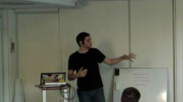

Prise de parole en public
Tim Carry
Developer Advocate à 
Co-organisateur des et des 
@pixelastic sur Twitter
Developer Advocate ?
2014
2016

Vous avez des choses à dire
Vous avez toujours raison sur un
retour d'experience

Les gens viennent pour le
contenu
, pas pour vous
Ce n'est pas du théatre. Vous ne faites pas une représentation.
Vous n'avez pas à faire une performance. Vous etes secondaire
au contenu.
Votre stress est
invisible

✘ Faux

✔ Vrai
Normal d'etre stressé
Mark Twain. Deux types de speakers. Ceux qui sont stressés, et
ceux qui sont des menteurs.
Stress reste à l'intérieur, ne se voit pas dehors.
Filmez-vous
Regardez-vous
Écoutez-vous
Si vous êtes
passionné
, vous serez passionant

Forme
- Laissez des blancs
- Légitimité
- Table of content
- Real-life examples
- No excuses
Questions?
tim@
algolia
.com@pixelastic